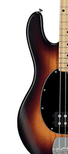

Basse
Le saviez-vous ? La basse est l'un des rares instruments capables de se faire ressentir autant qu'entendre. Ses fréquences graves peuvent faire vibrer tout le corps.
J'aime explorer le rôle de bassiste dans des univers très différents. Les quelques démos ci-dessous en donnent un aperçu : du métal avec Danila, gagnant de Swiss Voice, du groove avec des amis de la haute école de musique de Lausanne, et de la fusion afro-orientale avec Nicolas Viccaro.
